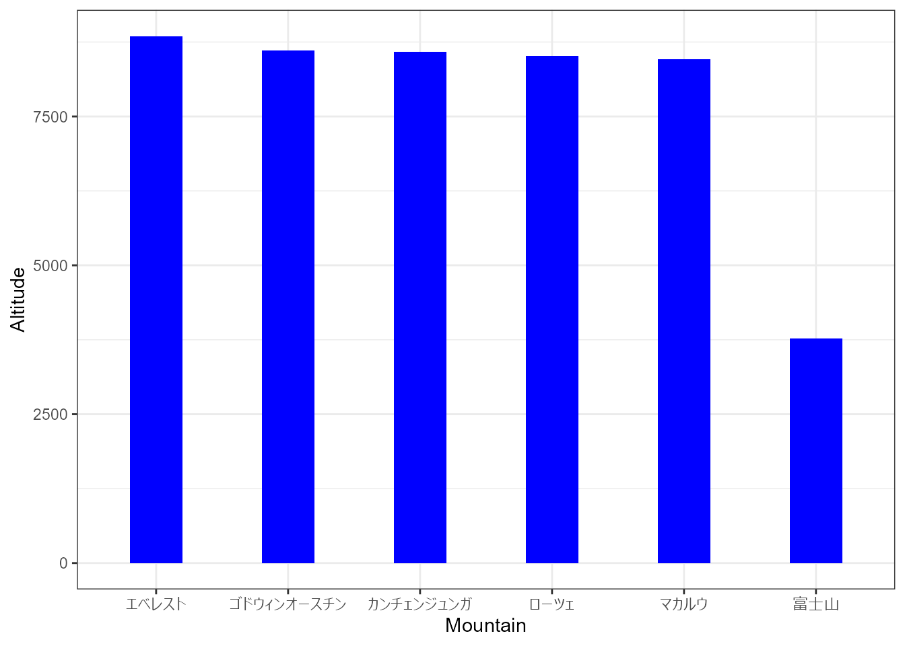
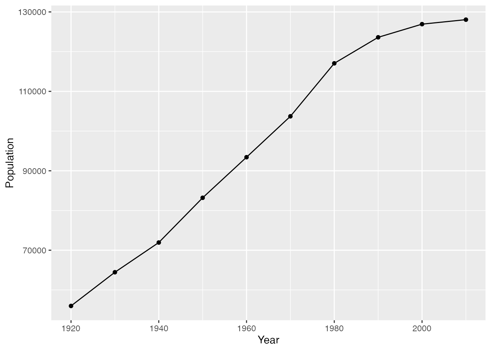
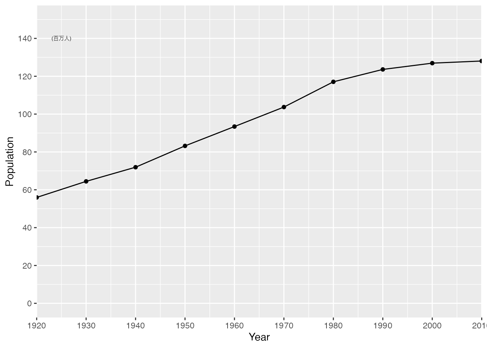
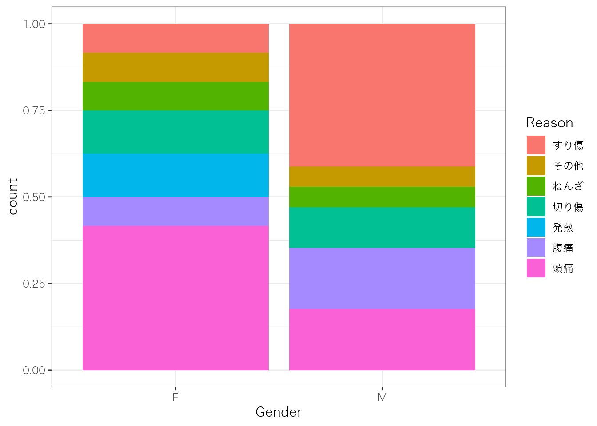
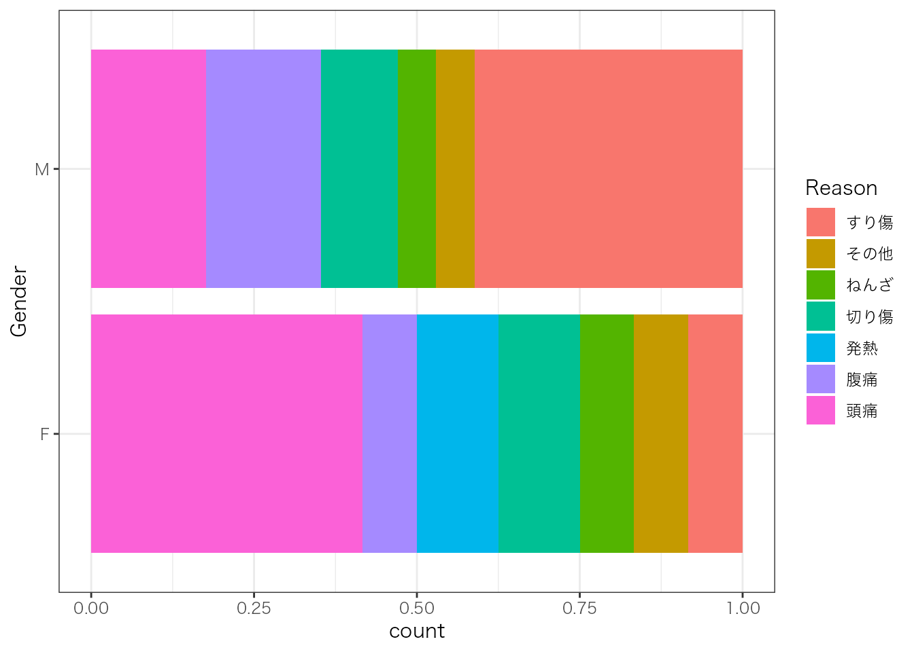
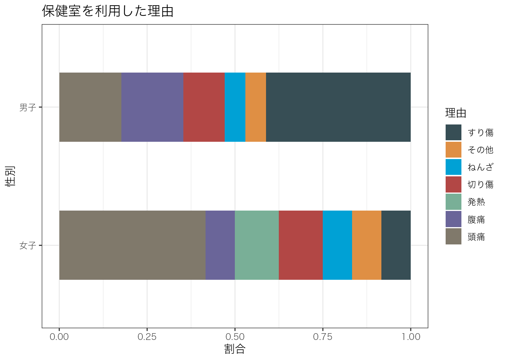
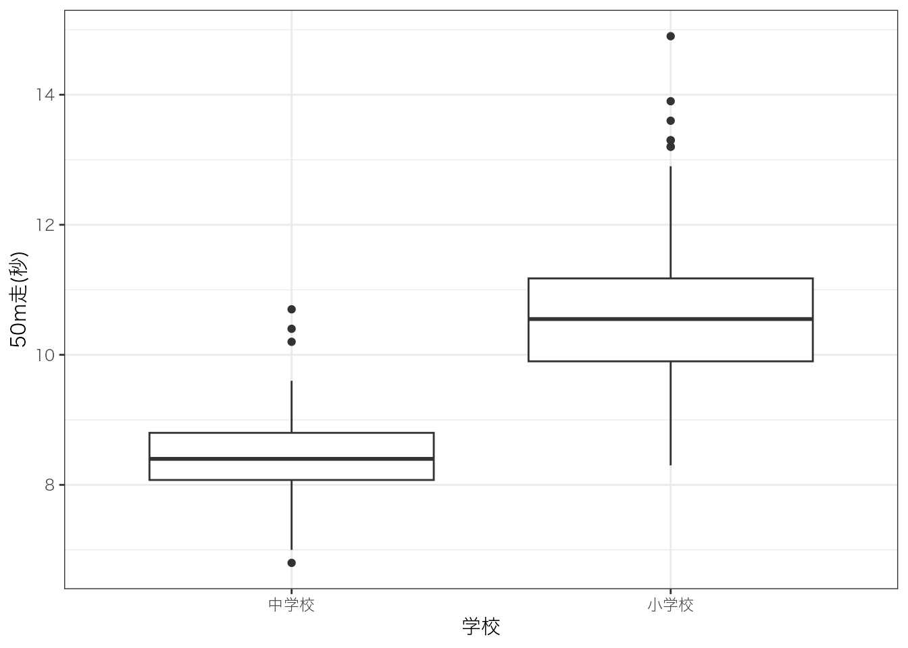
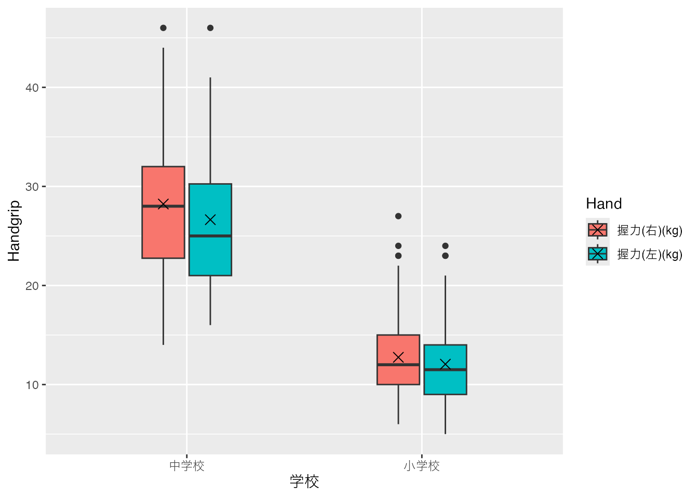

dfMountain <- data.frame(
Mountain = c("エベレスト","ゴドウィンオースチン","カンチェンジュンガ","ローツェ","マカルウ","富士山"),
Altitude = c(8848,8611,8586,8516,8463,3776)
)10 グラフ (ggplot2)
10.1 棒グラフ
Tip
TIP 093: 棒グラフ
棒グラフは、数量の大小を比較するのに適しています。
- 棒の高さが量を示します。
- 棒の幅は統一します。
- 並べ方は、種類ごとにまとめたり、大きい順など、工夫をすることができます。
- 何種類かの値を同時にグラフ化することもあります。
{ggplot2} を使って、棒グラフを描いてみましょう。
library(ggplot2)
ggplot(dfMountain, aes(x = Mountain, y = Altitude)) +
geom_bar(stat = "identity")注意: ggplot2 では、あいうえお順に並べるようです。このため、並び順が予想と異なっています。
Tip
TIP 094: 棒グラフの順序を指定
X 軸に設定する列を、文字型ではなく因子型に変更します。
dfMountain$Mountain <- factor(dfMountain$Mountain,
levels = c("エベレスト","ゴドウィンオースチン","カンチェンジュンガ","ローツェ","マカルウ","富士山"))
Tip
TIP 095: 棒グラフの色と幅を変える
元の図の幅と色から変えましょう。 geom_bar() 関数に、引数の width と fill を追加します。
library(ggplot2)
ggplot(dfMountain, aes(x = Mountain, y = Altitude)) +
geom_bar(stat = "identity", width = 0.4, fill = "blue") +
theme_bw(base_family = "Hiragino Kaku Gothic Pro W3")
Tip
TIP 096: 棒グラフの軸の目盛りを変える
つぎに、y 軸の目盛りを設定します。 これは、scale_y_discrete() 関数を追加します。
library(ggplot2)
ggplot(dfMountain, aes(x = Mountain, y = Altitude)) +
geom_bar(stat = "identity", width = 0.4, fill = "blue") +
scale_y_discrete(limits=c(0,1000,2000,3000,4000,5000,6000,7000,8000,9000,10000)) +
theme_bw(base_family = "Hiragino Kaku Gothic Pro W3")Warning in scale_y_discrete(limits = c(0, 1000, 2000, 3000, 4000, 5000, : Continuous limits supplied to discrete scale.
ℹ Did you mean `limits = factor(...)` or `scale_*_continuous()`?軸は、数直線です。ただし、数値はそのままでは見づらいことがあります。
library(ggplot2)
ggplot(dfMountain, aes(x = Mountain, y = Altitude)) +
geom_bar(stat = "identity", width = 0.4, fill = "blue") +
scale_y_discrete(limits=c(0,1000,2000,3000,4000,5000,6000,7000,8000,9000,10000),
labels=c("0","1,000","2,000","3,000","4,000","5,000","6,000","7,000","8,000","9,000","10,000")) +
theme_bw(base_family = "Hiragino Kaku Gothic Pro W3")Warning in scale_y_discrete(limits = c(0, 1000, 2000, 3000, 4000, 5000, : Continuous limits supplied to discrete scale.
ℹ Did you mean `limits = factor(...)` or `scale_*_continuous()`?library(ggplot2)
ggplot(dfMountain, aes(x = Mountain, y = Altitude)) +
geom_bar(stat = "identity", width = 0.4, fill = "blue") +
scale_y_discrete(limits=c(0,1000,2000,3000,4000,5000,6000,7000,8000,9000,10000),
labels=c("0","1,000","2,000","3,000","4,000","5,000","6,000","7,000","8,000","9,000","10,000")) +
theme_bw(base_family = "Hiragino Kaku Gothic Pro W3")Warning in scale_y_discrete(limits = c(0, 1000, 2000, 3000, 4000, 5000, : Continuous limits supplied to discrete scale.
ℹ Did you mean `limits = factor(...)` or `scale_*_continuous()`?
10.2 折れ線グラフ
Tip
TIP 097: 折れ線グラフ
read_excel() 関数に、sheet という引数を追加しています。 データフレーム dfJPop を確認してみてください。
折れ線グラフは、geom_line() 関数を使います。
library(ggplot2)
ggplot(dfJPop, aes(x = Year, y = Population)) +
geom_line()
Tip
TIP 098: 折れ線グラフに点を追加
折れ線グラフに geom_point() 関数を使って点を追加します。
library(ggplot2)
ggplot(dfJPop, aes(x = Year, y = Population)) +
geom_line() +
geom_point()
Tip
TIP 099: 折れ線グラフの軸の目盛りを変える
y 軸の目盛りを変えます。棒グラフと異なり、scale_y_discrete() 関数を scale_y_continuous() に変えます。
library(ggplot2)
ggplot(dfJPop, aes(x = Year, y = Population)) +
geom_line() +
scale_y_continuous(limits=c(0,140000),
breaks=c(0,20000,40000,60000,80000,100000,120000,140000))教科書的には、_discrete は整数（または順序変数）、_continuous は連続変数の場合に使うことになっています。
どうやら、棒グラフと折れ線グラフでは、軸の設定方法が異なるようです。
Tip
TIP 100: 任意のテキストを追加 (1)
y 軸の目盛りの数値が大きいため、百万人単位に変えたいとします。
scale_y_continuous() 関数に、labels 引数を設定して目盛りを変更します。
これに加えて、annotate() 関数を使い、テキストを追加します。
library(ggplot2)
ggplot(dfJPop, aes(x = Year, y = Population)) +
geom_line() +
geom_point() +
scale_x_continuous(breaks=c(1920, 1930, 1940, 1950, 1960, 1970, 1980, 1990, 2000, 2010),
expand = c(0, 0)) +
scale_y_continuous(limits=c(0,150000),
breaks=c(0,20000,40000,60000,80000,100000,120000,140000),
labels=c("0","20","40","60","80","100","120","140")) +
annotate("text", x=1925, y=140000, label="(百万人)", size = 2)
Tip
TIP 101: 任意のテキストを追加 (2): hjust と vjust
annotate() の位置は、デフォルトでは、x と y で指定した位置の中央揃えです。
hjust 引数は、0 が左揃え、0.5 が中央揃え (デフォルト)、1 が右揃えになります。
vjust 引数は、“top” が上寄せ、“center” が中央、“bottom” が下寄せになります。
library(ggplot2)
ggplot(dfJPop, aes(x = Year, y = Population)) +
geom_line() +
geom_point() +
scale_x_continuous(breaks=c(1920, 1930, 1940, 1950, 1960, 1970, 1980, 1990, 2000, 2010),
expand = c(0, 0)) +
scale_y_continuous(limits=c(0,150000),
breaks=c(0,20000,40000,60000,80000,100000,120000,140000),
labels=c("0","20","40","60","80","100","120","140")) +
annotate("text", x=1950, y=140000, label="左揃え", size = 2, hjust = 0) +
annotate("text", x=1970, y=140000, label="中央揃え", size = 2, hjust = 0.5) +
annotate("text", x=1990, y=140000, label="右揃え", size = 2, hjust = 1) +
annotate("text", x=1950, y=100000, label="上寄せ", size = 2, hjust = 0, vjust="bottom")
Tip
TIP 102: 任意の線を追加
線を追加するのも、annotate() 関数を使います。最初の引数を “text” から “segment” に変えます。線の場合は、(x, y) から (xend, yend) まで線が引かれます。
Warning: Using `size` aesthetic for lines was deprecated in ggplot2 3.4.0.
ℹ Please use `linewidth` instead.
Tip
TIP 103: グラフ外に annotate()
グラフ外に annotate() 関数を使って、テキストなどを表示します。
まず、scale_x_continuous(limits=c(x1,x2)) を使い、 テキストを置く範囲を示します。
この上で、表示範囲を coord_cartesian(xlim = c(x3,x4), clip = "off") で指定します。
以下の例では、annotate() を使い、“(百万人)” というテキストをグラフ外に表示させています。
List of 2
$ axis.title.x: list()
..- attr(*, "class")= chr [1:2] "element_blank" "element"
$ axis.title.y: list()
..- attr(*, "class")= chr [1:2] "element_blank" "element"
- attr(*, "class")= chr [1:2] "theme" "gg"
- attr(*, "complete")= logi FALSE
- attr(*, "validate")= logi TRUEannotate(): プロット上に、文字 (“text”)、ボックス (“rect”)、線 (“segment”) などを描きます。 x, y は、プロット中の x, y を使用します。coord_cartesian(): プロットの範囲を指定します。
ここでは、百万人という文字を、図の範囲外である1907年のあたりに表示させたかったので、coord_cartesian() で図の領域を広げ、ただしプロットはscale_x_continuous()で範囲を区切って表示しました。
theme():theme(axis.title.x = element_blank())これは、x軸のタイトルを表示させないための設定です。
10.3 度数とデータフレームの操作
この表は、合計値を意図的に追加していません。 まず、Pupils の合計を計算してみましょう。
sum(dfInjury$Pupils)[1] 40最初に表示される [1] は、返り値の一つ目であることを表しています。 合計は 40 人です。 また、Rmd の文章中で、この「40」という計算結果を表示させたいときは、`r sum(dfInjury$Pupils)` と書きます。
10.4 相対度数
Tip
TIP 104: 相対度数
統計検定４級テキスト p. 56 にあるように、相対度数を計算して、データフレーム dfInjury に追加しましょう。 相対度数の列名は Proportion とします。
dfInjury$Proportion <- proportions(dfInjury$Pupils)関数
proportions(): ある数字の列 (例: 1, 2, 2) に対し、その相対度数 (例: 0.2, 0.4, 0.4) を返す。
dfInjury$Proportion は、データフレーム dfInjury に、新たに Proportion 列を追加します。 その追加するものが、proportions() 関数の返り値です。 この関数の引数に、dfInjury$Pupils は、データフレーム dfInjury の Pupils 列です。
R では、このように列データに対して一気に計算をすることができます。
なお、これは、以下のようにしても得られます。
dfInjury$Proportion <- dfInjury$Pupils / sum(dfInjury$Pupils)10.5 複合グラフ
Tip
TIP 105: 複合グラフ
ここでは、棒グラフと折れ線グラフを一つのプロットに重ねて描いてみようと思います。
棒グラフの y 軸は左側に設定します。 折れ線グラフの y 軸は右側に設定します。
複合グラフを描くために、統計検定テキスト４級の p. 60 のデータを使ってみましょう。 まず、エクセルファイルをインポートし、データフレームに格納します。 このデータフレームは、野球選手である松坂投手の球種別の投球数のデータです。 、統計検定テキスト４級の p.60 の表2.2.5の投球数までとなっています。
factor() 関数は、因子に変更して返します。 最初の引数の dfMatz$PitchType は、データフレーム dfMatz の PitchType 列を表しています。 因子は順序を付けることができるのですが、ここではそのままの順序にします。 このため、levels = dfMatz$PitchType という引数を追加しています。
返した値は、データフレーム dfMatz の PitchType 列に格納します。 つまり、上書きをします。
library(readxl)
dfMatz <- read_excel("kentei4.xlsx", sheet = "p60")
dfMatz$PitchType <- factor(dfMatz$PitchType, levels = dfMatz$PitchType)RStudio の Environment ペインで、Factor に代わっていることを確認しましょう。
10.5.1 累積度数の計算
統計検定４級テキスト p. 60 にあるとおり、累積とは、ある度数などを順に足していくことです。 累積度数とは、ある度数列を順に足していった列となります。 R では、累積度数は、Base R にある関数 cumsum() を使って設定することができます。
データフレーム dfMatz にある列 Frequency を元に、累積度数を計算します。 累積度数は、新しい列 CumulativeSum に格納します。
dfMatz$CumulativeSum <- cumsum(dfMatz$Frequency)
dfMatz$CumulativeProportion <- dfMatz$CumulativeSum / sum(dfMatz$Frequency)最終的に、dfMatz データフレームに、新しい列 CumulativeProportion を作って格納しています。
10.5.2 棒グラフ + 折れ線グラフ
では、複合グラフとして、投球数を棒グラフ、累積相対度数を折れ線グラフで描いてみます。
まずは、級種別の投球数を棒グラフ化します。 おなじみの ggplot() と geom_bar() という関数を使用します。
library(ggplot2)
ggplot(dfMatz, aes(x = PitchType, y = Frequency)) +
geom_bar(stat = "identity")次に、累積相対度数の折れ線グラフを描きます。 ここで大事なことは、もともと ggplot() 関数には、引数 x に PitchType, 引数 y に Frequency を指定しています。 このままでは x はよくても y が累積相対度数になりません。 そこで、geom_line() 関数には、改めてデータフレーム、x, y を指定します。
ただし、ここで問題があります。 上で棒グラフを描いたときに、y 軸の幅が 0 から 1560 までになりました。
しかし、CumulativeProportion は割合なので、数値が 0.1 や 0.9 などになります。 そこで、CumulativeProportion に 1500 を掛けて、線がつぶれてしまわないようにします。
library(ggplot2)
ggplot(dfMatz, aes(x = PitchType, y = Frequency)) +
geom_bar(stat = "identity") +
geom_line(data = dfMatz, aes(x = PitchType, y = CumulativeProportion * 1500, group = 1, inherit.aes = FALSE))Warning in geom_line(data = dfMatz, aes(x = PitchType, y = CumulativeProportion
* : Ignoring unknown aesthetics: inherit.aes
最後に、scale_y_continuous() 関数を使って右側に二つ目の y 軸を設定します。 二つ目 (second) の y 軸なので、sec.axis という引数に、sec_axis() 関数を使って設定します。この辺は、似たような名称のものが連続するので、分かりづらい点ですね。
なお、このとき、目盛りが 1500 倍されているので、1500 で割ります。
library(ggplot2)
ggplot(dfMatz, aes(x = PitchType, y = Frequency)) +
geom_bar(stat = "identity") +
geom_line(data = dfMatz, aes(x = PitchType, y = CumulativeProportion * 1500, group = 1, inherit.aes = FALSE)) +
scale_y_continuous(sec.axis = sec_axis(~./1500, name = "累積度数"))Warning in geom_line(data = dfMatz, aes(x = PitchType, y = CumulativeProportion
* : Ignoring unknown aesthetics: inherit.aes10.6 帯グラフと円グラフ
Tip
TIP 106: 複合グラフ (2)
10.7 Long データから棒グラフ
まず、データを準備します。 統計検定４級テキスト p. 55 の保健室のデータをちょっと改良したものを用意しました。 エクセルファイルは kentei4.xlsx で、シートは p55-raw です。
library(readxl)
dfInjury <- read_excel("kentei4.xlsx", sheet = "p55-raw")
dfInjury$Reason <- factor(dfInjury$Reason)
dfInjury$Gender <- factor(dfInjury$Gender)では、ひとまず Reason 列だけで棒グラフを作図してみましょう。
ggplot(dfInjury, aes(x = Reason)) +
geom_bar(position = "identity")10.8 帯グラフの作図
Tip
TIP 107: 帯グラフ
では、いよいよ帯グラフを描きましょう。 まず、引数 x には性別を設定します。 引数 y は、件数を数えるため、設定しません。 ここで新たに、fill という引数を設定します。 これが、帯の模様を作る要因になります。
ggplot(dfInjury, aes(x = Gender, fill = Reason)) +
geom_bar()おや、これでは件数をそのまま積み上げており、比率を求めたことになりません。 帯グラフにするためには、 geom_bar() 関数 に、position = "fill" という引数を与えます。
ggplot(dfInjury, aes(x = Gender, fill = Reason)) +
geom_bar(position = "fill") +
theme_bw(base_family = "Hiragino Kaku Gothic Pro W3")
ここで、ちょっと分かりにくいのは、ggplot() 関数の中の fill は引数ですが、geom_bar() 関数に与えている “fill” は、文字列なのでクォーテーションマークで囲っています。
縦棒ではなく、横棒にしましょう。 coord_flip() という関数を追加します。
ggplot(dfInjury, aes(x = Gender, fill = Reason)) +
geom_bar(position = "fill") +
coord_flip() +
theme_bw(base_family = "Hiragino Kaku Gothic Pro W3")
色がどぎついままですね。 色については、R では科学ジャーナルに応じた色パレットを提供するパッケージがあります。 パッケージ名は ggsci です。 このパッケージには、Lancet 風の色にする scale_fill_lancet() や、JAMA 風にする scale_fill_jama() 関数があります。。
library(ggsci)
ggplot(dfInjury, aes(x = Gender, fill = Reason)) +
geom_bar(position = "fill") +
coord_flip() +
scale_fill_jama() +
theme_bw(base_family = "Hiragino Kaku Gothic Pro W3")最終的には、以下のようにしてみました。
library(ggsci)
ggplot(dfInjury, aes(x = Gender, fill = Reason)) +
geom_bar(position = "fill", width = 0.5) +
coord_flip() +
scale_fill_jama(name = "理由") +
ggtitle("保健室を利用した理由") +
xlab("性別") + ylab("割合") +
scale_x_discrete(labels = c("女子", "男子")) +
theme_bw(base_family = "Hiragino Kaku Gothic Pro W3")
10.9 ヒストグラム
Tip
TIP 108: ヒストグラム
統計検定４級テキスト p. 116 に説明されている、「科学の道具箱」のサイトから、「01.小・中学校体力測定データ」をダウンロードします。
library(curl)
curl_download("https://rika-net.com/contents/cp0530/contents/data/04-03-01.xls", "tairyoku.xls")
library(readxl)
dfTairyoku <- read_excel("tairyoku.xls")library(readxl)
dfTairyoku <- read_excel("tairyoku.xls")
dfTairyoku$`学校` <- factor(dfTairyoku$`学校`)では、ggplot2 を使って、ヒストグラムを描いてみましょう。 日本語の列名は、バッククォートで囲むことで使うことができます。
library(ggplot2)
ggplot(dfTairyoku, aes(x = `50m走(秒)`)) +
geom_histogram() +
theme_bw(base_family = "Hiragino Kaku Gothic Pro W3")`stat_bin()` using `bins = 30`. Pick better value with `binwidth`.10.10 箱ひげ図
Tip
TIP 109: 箱ひげ図
次に箱ひげ図 (box-whisker plot) を描いてみます。 箱ひげ図は、英語では box-whisker ですが、関数名は geom_box() です。
なお、統計検定４級テキスト p. 117 では、「学校」列で層別化 (strata) しています。
library(ggplot2)
ggplot(dfTairyoku, aes(x = `学校`, y = `50m走(秒)`)) +
geom_boxplot() +
theme_bw(base_family = "Hiragino Kaku Gothic Pro W3")
p. 118 の図2.3.30 のように、並べて表示するためには、データを Long 形式にしなければなりません。
library(tidyr)
dfTairyokuLong <- pivot_longer(dfTairyoku,
cols = c(`握力(左)(kg)`, `握力(右)(kg)`),
names_to = "Hand",
values_to = "Handgrip")これで、データが Long になっています。 データを確認してみましょう。
それでは、いよいよ図を作成します。 引数 x には学校 (学校列)、y には握力 (Handgrip列) です。 左手と右手を並べるため、fill 引数に Hand 列を指定します。
library(ggplot2)
ggplot(dfTairyokuLong, aes(x = 学校, y = Handgrip, fill = Hand)) +
geom_boxplot(width = 0.4)統計検定４級テキスト p. 118 の図2.3.30では、平均値も追加しています。
library(ggplot2)
ggplot(dfTairyokuLong, aes(x = 学校, y = Handgrip, fill = Hand)) +
geom_boxplot(width = 0.4) +
stat_summary(fun.y=mean, geom="point", shape=4, size=3, color="black",
position = position_dodge2(width = 0.4, preserve = "single"))Warning: The `fun.y` argument of `stat_summary()` is deprecated as of ggplot2 3.3.0.
ℹ Please use the `fun` argument instead.
小学校と中学校を入れ替えたり、色を変えてみてください。
10.11 散布図
統計検定４級テキスト p. 118 には、散布図(図2.3.31)があります。 これを作図してみましょう。
使用するのは、これまでと同じく ggplot2 パッケージです。 点を追加するので、geom_point() 関数を追加します。
相関の高そうな、握力の右と左を使ってみましょう。 なお、データフレームは Wide 形式の方を使っています。
library(ggplot2)
ggplot(dfTairyoku, aes(x = dfTairyoku$`握力(右)(kg)` , dfTairyoku$`握力(左)(kg)`)) +
geom_point()Warning: Use of `` dfTairyoku$`握力(右)(kg)` `` is discouraged.
ℹ Use `握力(右)(kg)` instead.Warning: Use of `` dfTairyoku$`握力(左)(kg)` `` is discouraged.
ℹ Use `握力(左)(kg)` instead.10.12 散布図行列
Tip
TIP 110: 散布図行列
統計検定４級テキスト p. 119 には、散布図がたくさんまとまった図（図2.3.32）があります。 これを作図してみましょう。
使用するのは、GGally パッケージにある ggpairs() という関数です。 すべての列を使用すると多すぎるので、第４列(握力(右)(kg))から第７列(長座体前屈(cm))までを指定します。
library(GGally)Registered S3 method overwritten by 'GGally':
method from
+.gg ggplot2ggpairs(dfTairyoku,
columns = c(4, 5, 6, 7))相関図に加えて、相関係数も表示されています。